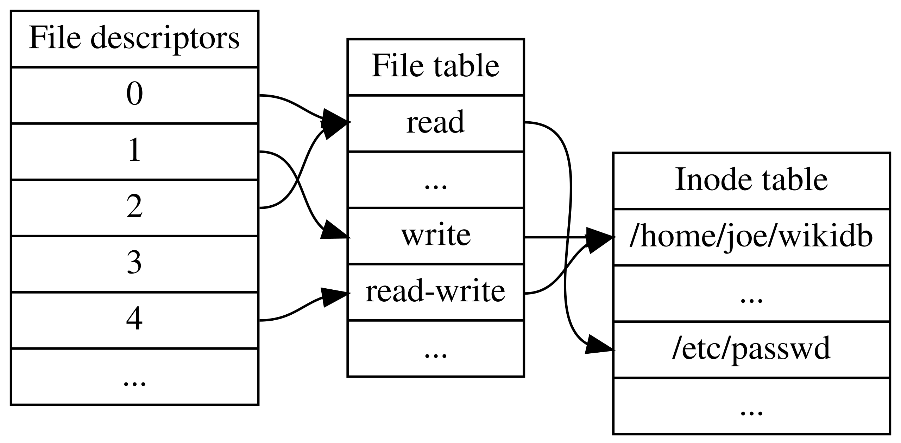

참고한 것들
File Descriptor (순한맛)
- 블로그를 몇군데 돌아다니다 보니까, 대강 내용들이 다 비슷비슷하다.
- 뭐 UNIX (Linux) 계열에서는 모든 것을 파일로 관리한다던지,
- FD 라는 것은 파일에 접근하기 위한
unsigned int값이라던지, STDIN,STDOUT,STDERR은 고정된 FD 값을 가진다던지ls로 FD 를 확인하는 방법이랄지
- 이건 모두 비슷한 강의를 보고 정리한 내용이기에 그럴 것이다.
- 일단 FD 에 대해 간단히 정리해 보자.

출처: 위키
{kind=link}
- 파일을 열면 (
open), - File descriptor 가 생성돼서 어딘가 (위 그림에서는 “File table”) 에 저장되고,
- 이놈을 가리키는 포인터가 process metadata 의 어딘가 (위 그림에서는 “File descriptors”) 에 저장되며
- 이놈의 index 를 우리가 흔히 알고 있는
unsigned int값인 거다.
File Descriptor (매운맛)
Linux 6.11 기준입니다.
- 그럼 이걸 코드로 확인해 보자.
- File descriptor 의 구조체 이름은
struct file이다. (Code ref)- 여기를 보면 file 의 inode 를 가리키고 있는 것을 볼 수 있다.
- 즉, process 입장에서는 file descriptor index -> file descriptor -> inode 순서로 찾아가게 되는 것.
struct file {
// ...
struct inode *f_inode; /* cached value */
// ...
};- Linux 에서 process 의 정보를 저장하는 구조체 이름은
struct task_struct이다. 여기 보면struct files_struct *files라는 pointer 가 하나 있다. (Code ref)
struct task_struct {
// ...
struct files_struct *files;
// ...
};- 여기를 들여다 보면, 연관된 field 가 세개 있다:
fdt,fdtable,fd_array. (Code ref)
struct files_struct {
// ...
struct fdtable __rcu *fdt;
struct fdtable fdtab;
// ...
struct file __rcu * fd_array[NR_OPEN_DEFAULT];
// ...
};struct fdtable의 구조를 보면 다음과 같다. 안에는 open file descriptor 들을 위한 array pointer 가 있다. (Code ref)
struct fdtable {
// ...
struct file __rcu **fd; /* current fd array */
// ...
};- 다시
struct files_struct로 돌아와서, 각 필드가 하는 역할은 다음과 같다.struct fdtab: File descriptor table 의 메인 access point 이다.struct file *fd_array[]: Open file 이 적을 경우에는 여기에file들이 담기게 된다.- 이놈은 Open file 이 적을 때를 위한 static allocated 공간이고,
- 그래서 기본적으로
fdtab으로 진입했을 때 이 공간을 보게 된다. - 따라서 처음에는
fdtab->fd가 이놈을 가리키도록 설정된다.
struct fdtable *fdt: Open file 이 많을 경우를 위한 dynamic allocated 공간이다.- 즉, open file 들이 많아지면
fdt가 동적으로 생성되고, fdtab->fd가fdt->fd를 가리키게 되어 이때부터는fdtab으로 진입했을 때 이 공간을 보게 된다 1.
- 즉, open file 들이 많아지면
Footnotes
-
다만 왜
struct fdtable전체를 dynamic allocation 하는지는 모르겠다. 단순하게NR_OPEN_DEFAULT보다 더 큰 공간을 할당하기 위함이라면 그냥struct file**을 동적하면 될텐데 ↩